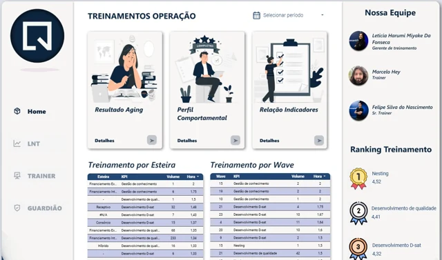

EXPLORAR PROJETOQuintoAndar · Treinamento
Treinamentos FS
Desenvolvimento de pessoas, acompanhado de perto.
Detalhes e links
Registro concentrado e ranqueado da equipe de treinamento, com visão individual e composta dos analistas novos, treinamentos aplicados, atuação dos guardiões, notas e apontamentos para mapear rendimento e pontos de melhoria.
Abrir dashboard